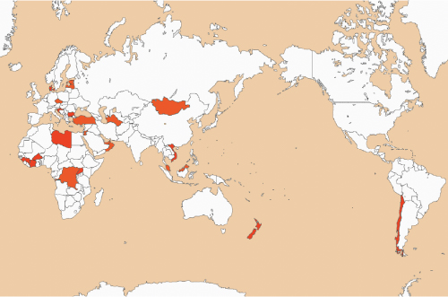
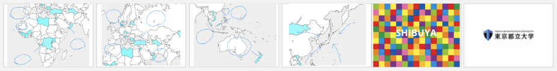
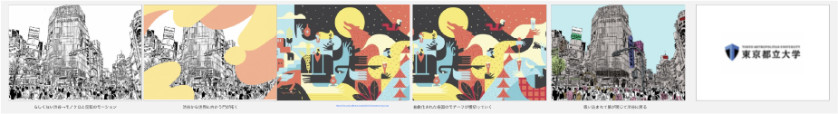
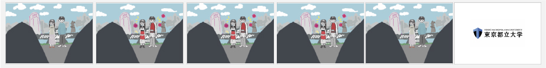
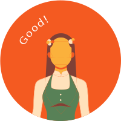

一般社団法人渋谷駅前エリアマネジメント様との共同研究プロジェクトで制作中の映像作品です。
渋谷スクランブルスクエア東棟ビジョンに放映される予定です。
制作期間： ３ヶ月
制作担当領域 : 大学院生3人グループで制作を行い、私はアイディア出し、グラフィックデザインに携わりました。
制作のゴール
渋谷らしさを表現する15秒のモーショングラフィックスを制作する
ヒアリング
授業中に一般社団法人渋谷駅前エリアマネジメントの3名にお越しいただき、SHIBUYA +FUN PROJECT
のコンセプト、行なっていること、共同研究で求めることについてお聞きしました。

とは？
遊び心で渋谷を動かせ。
渋谷を愛する人に、もっと愛してもらえるように。
これまで渋谷とつながりがなかった人にも、好きになってもらえるように。
SHIBUYA +FUN PROJECTは、渋谷駅前エリアマネジメント協議会と一般社団法人
渋谷駅前エリアマネジメントの2つの団体が行政・地元・民間企業と力を合わせて変化しつづける渋谷駅前エリアに
遊び心をプラスしてもっとたくさんの好奇心や創造性が集まるまちを作っていくプロジェクトです。
共同研究で求めること
映像で “渋谷らしさ” 、“多様性”を表現する
制作のコンセプト
渋谷といえば・・・
ストリートカルチャー、ポップカルチャー
多くの人がイメージする渋谷だけが “渋谷らしさ” なのか？
渋谷の 新しい魅力 を発信する
調査
渋谷区の駅から少し外れたところをメインに商業施設、公共施設、
文化施設などをGoogleMapでピンを立てたり、インターネットでそれらの施設について調査、
実際に現地を訪れ高級住宅街の雰囲気を感じるなど調査を行いました。
渋谷には24カ国の大使館がある！

エストニア
トルクメニスタン
サントメプリンシペ民主共和国
ヨルダン
コンゴ共和国
ブルキナファソ など
アフリカ・西アジア・ヨーロッパの地域の大使館が多い
日本にある大使館の数の地域別ランキングで渋谷区は２位！港区はアメリカやイタリアなど主要国が多いのに対し、
渋谷区ではあまり聞き馴染みのない発展途上国も多いことがわかりました。
「 24カ国の窓口、SHIBUYA 」
渋谷は24カ国にとっての窓口。たくさんの文化が渋谷に詰まっている ＝ 渋谷の多様性を伝える
アイディア出し
15秒という短い時間の中でどのように見せるのが良いか？既存のCMなどを参考にムードボードを集め、
ラフイラストやイメージ画像を用いた15秒のタイムライン案を6つ出しました。



表現方法
各国のモチーフを使って1枚の絵にすることで表現する
それぞれの国の国旗や文字で表現する案もありましたが、あまり聞き馴染みのない国であることを踏まえ、
それぞれの国を象徴するモチーフをイラストにすることでその国の色が出やすいと考えました。
色を５色に絞りモチーフを描くことで統一感を
共同制作でモチーフを作る担当を分担した時に、あらかじめイメージする色は伝えていたものの、モチーフそのものの使われている色が多く、
作り手によって雰囲気が異なってしまう問題が発生しました。そこで、外の大画面で映った時の見え方、
アフリカ地方を感じさせる色の観点から話合い、５色を決めました。
最終成果物
イラストはアジア→アフリカ→ヨーロッパと移り変わる。最初は渋谷をモノクロで表現。最後はカラフルな渋谷となり、渋谷に様々な文化が存在していることを表現。
複雑な形状なのでモチーフが下に寄りすぎないよう心がけた。本来15秒ですがここでは時間を伸ばしています。
フィードバック
最終的に出来上がった動画をエリアマネジメント方にお見せし、フィードバックをいただいた。
対面では２名、zoomでも5名前後の方が参加してくださりました。

・渋谷にはいろんな文化があるのでみんなスクランブル交差点ではつまらない、コンセプト良い！
・新しい渋谷の魅力を見つけられている
・イラスト可愛い、統一感が良い
・外国出身の方から自分の国を見つけた時嬉しかったと言ってもらえた
・たまたま通りかかった人にコンセプトをどう伝えるか
・要素が多いから絞った方が伝わりやすいかも
・ターゲット層をもっと絞ってもいいかも
今後の課題
・現在15秒で見せると少し早い印象を受けるので15秒に収まるように調節する
・場面転換、各モチーフの動きについて後期検討する
・イラストの粒度を合わせる